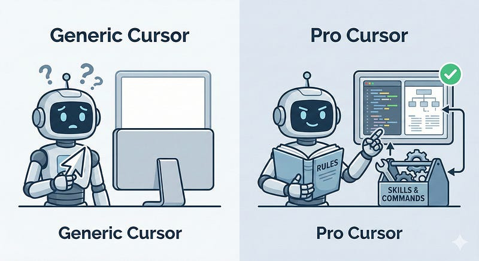
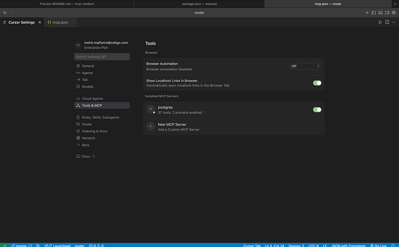
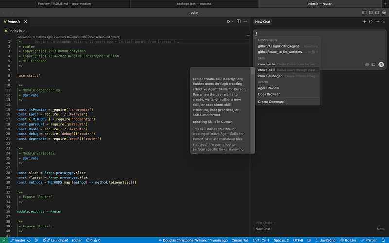

Let’s be honest for a second. We have all been there.
We download Cursor, we install the extension, and we hit tab a few times. It feels magical. It predicts our next line, maybe even our next function. We feel productive.
But if that is all we are doing, we are driving a Ferrari like it’s a golf cart.
Most developers treat Cursor just like a slightly smarter Copilot. We treat it as a tool, something we pick up to fix a bug or write a loop. But the real magic happens when we stop treating it like a tool and start treating it like a teammate.
Think about it. When a new senior developer joins our team, we don’t just tell them write code. We onboard them. We tell them:
- “We use TypeScript, not JavaScript.”
- “We prefer functional programming over OOP.”
- “Never commit secrets to the repo.”
So why do we expect our AI to know this magically?
If we find ourselves typing the same instructions over and over like “Use arrow functions,” “Don’t use any," "Check the database schema". Ee are falling into the "Generic AI" trap.
To fix this, we need to master the three pillars of Cursor’s advanced configuration, Rules, Skills and Commands.
Rules (Constitution for AI)
The biggest friction with AI is Context. Usually, we have to prime the chat: “I am using Next.js 14 with the App Router, please don’t give me Pages router code.”
Rules solve this permanently. Think of Rules as the passive brain of the AI. These are instructions that are always active, silently guiding every suggestion the AI makes.
In the past, we might have used a messy system prompt. Now, Cursor gives us .cursorrules (and the newer .cursor/rules folder). This is where we define the "Constitution" of our project.
What goes inside?
- Tech Stack Hard-constraints: Force the AI to use specific libraries (e.g. “Always use date-fns, never
moment.js"). - Architectural Patterns: Enforce folder structures (e.g. “All components must go in
src/components/ui"). - Code Style: Ban
anytypes or enforce strict error handling.
The Pro Setup: Don’t just dump text. Structure it. Here is a snippet of a robust .cursorrules file you can use in production
# 1. Tech Stack & Principles
- You are an expert in TypeScript, Node.js, and PostgreSQL.
- We strictly follow SOLID principles.
- PREFER readability over clever one-liners.
# 2. Syntax & Formatting
- Use strict TypeScript. NO "any" types allowed.
- Use `const` over `let`.
- All async functions MUST have try/catch blocks.
# 3. Project Structure
- Frontend components: `src/components`
- Database schema: `prisma/schema.prisma`
- formatting: Prettier
# 4. Forbidden Libraries
- DO NOT use `moment.js` (Use `date-fns`).
- DO NOT use `axios` (Use native `fetch`).Now, we never have to tell the AI to “use fetch” again. It just knows.
Skills (Hands for AI)
If Rules are the brain, Skills are the hands. This is the most game-changing feature that flew under the radar for many. It is powered by MCP (Model Context Protocol).
The AI is smart, but it is blind. It doesn’t know what is in our production database right now. It doesn’t know the status of the Jira ticket we are working on. It only knows what is in the text editor.
Skills change that by enabling Skills (MCP servers), we give Cursor permission to “step outside” the editor and fetch real information.
Following are some real world use cases
- Postgres Skill: Instead of pasting your schema into the chat, the AI can query your local database schema directly to write accurate SQL joins.
- Linear/Jira Skill: You can say “@Linear, what are the acceptance criteria for issue #123?” and it will pull the ticket details to generate the code.
- Documentation Skill: We can feed it external documentation urls so it doesn’t hallucinate API methods that don’t exist.
How to set it up ?
Go to Cursor Settings -> Features -> MCP. You can add local command-line tools or remote servers.
Scenario: We ask the AI to “Fix the bug in the users query.”
- Without Skills: The AI guesses column names.
- With Skills: The AI checks the actual Postgres schema, sees that the column is named user_id (not id), and writes the correct query.

Commands (Macros for AI)
Finally, we have Commands. Rules are passive (always on). Skills are reactive (fetching data). Commands are proactive.
Think of Commands as “Saved Prompts” or Macros.
As developers, we have repetitive tasks. Maybe we always run a specific type of security check, or we always want a unit test written in a specific format (e.g., “Given-When-Then”).
Instead of typing “Please write a unit test for this file using Jest and following the Given-When-Then pattern” every single time, we create a command.
How to create a Command ?
We can define these in our Cursor settings or rules. We map a trigger (like /test-gen) to a specific prompt.
Following is a example for command /explain-complex.Sometimes we inherit legacy code that looks like spaghetti. We can set up a command to break it down.
# Command Trigger: /explain-complex
# Prompt:
"Analyze the selected code block.
1. Break down the logic flow step-by-step in plain English.
2. Identify any potential 'magic numbers' or hardcoded strings.
3. Explain the Big-O complexity.
4. Suggest one way to simplify it."Now, when we see a scary function, we just highlight it, type /explain-complex, and get a senior-level breakdown instantly.

Conclusion
The difference between a junior developer using Cursor and a senior developer using Cursor isn’t the code they write, it’s the context they provide.
If we treat Cursor like a magic wand, it will be hit-or-miss. But if we treat it like a teammate:
- Onboard it with
.cursorrules(Rules) - Give it tools with MCP (Skills)
- Automate workflows with Shortcuts (Commands)
Now stop fighting with the chat box and start shipping value by using it to its full potential.